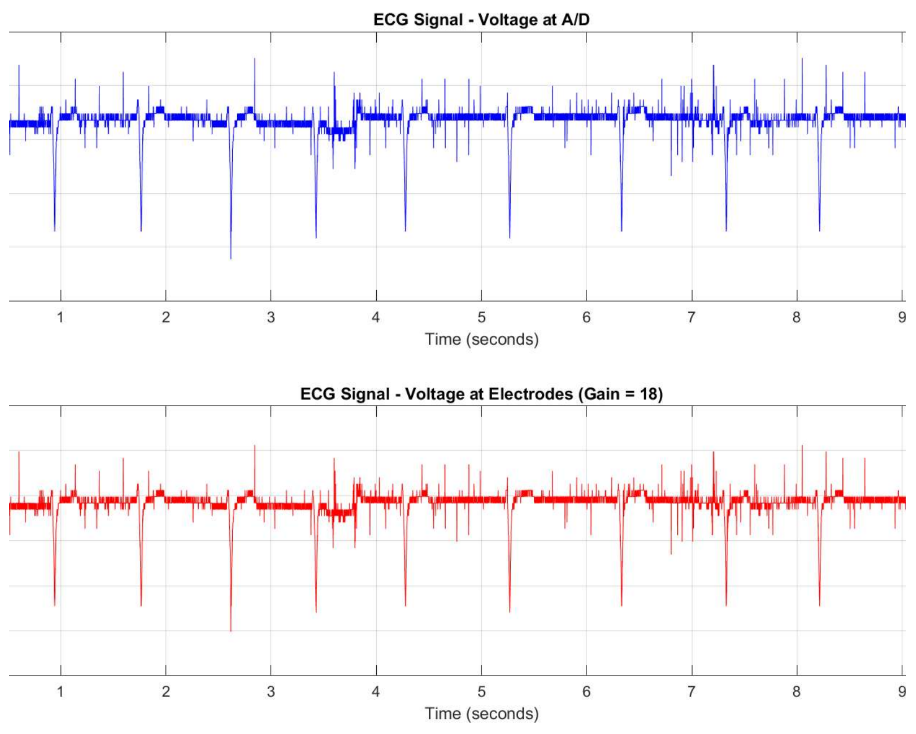
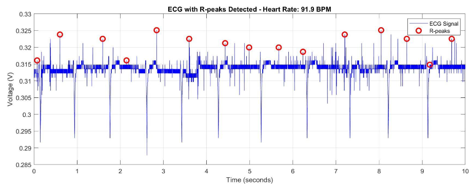

ECG Signal Processing System
November 2025 – December 2025

Overview
A complete ECG acquisition system that takes millivolt-scale signals from chest electrodes and turns them into a clean heart rate reading. Built over two lab cycles, the system runs from electrodes through an instrumentation amplifier, a cascaded analog filter chain, and a 14-bit ADC into MATLAB for R-peak detection.
The Problem
ECG signals from the skin are only a few millivolts. They sit underneath much larger noise sources: 60 Hz power line hum, DC offsets from electrode-skin chemistry, muscle artifacts, and high-frequency noise that would alias into the signal band during sampling. The system has to amplify what you want while rejecting everything else, and it has to do it in the right order before any digital conversion happens.
Instrumentation Amplifier
The front end is an AD627 instrumentation amplifier with a 10 kΩ gain resistor, giving a theoretical gain of 25. It runs on dual 1.5 V AA batteries to keep it isolated from AC mains noise, with 0.1 µF decoupling capacitors on both rails. Measured differential gain came in at 21.5, slightly under theoretical due to component tolerances and breadboard contact resistance.
Common mode rejection is what really matters for ECG. I tested it by feeding a 500 mV sine wave into both inputs at the same time and measuring the residual output of 3.2 mV. That gave a measured CMRR of 70.5 dB. The AD627 datasheet specs 80 to 85 dB, so there was some margin lost to electrode impedance mismatch and breadboard layout, but it was still more than enough to pull a clean QRS complex out of ambient noise.
Filter Chain
Two filter stages clean up the AD627 output before digitization, both built on halves of an LT1490 dual op-amp.
The high-pass filter has a 0.106 Hz cutoff. That is deliberately far below the lowest ECG frequencies of interest, so it strips out slow DC offsets from the electrodes without touching the signal. The low-pass filter has a 159 Hz cutoff and acts as the anti-aliasing filter. ECG content sits below 150 Hz, but anything above 500 Hz would fold back into the signal band during sampling and corrupt the data permanently. Total system gain through all three stages comes out to 18.
Digital Acquisition
The filtered signal goes into a NI USB-6001 ADC sampling at 1 kHz, well above the Nyquist requirement for the 159 Hz LPF cutoff. The 14-bit converter resolves to about 1.22 mV per level, more than enough headroom for the amplified ECG. From there MATLAB's findpeaks identifies the R-waves (the tallest peak in each heartbeat) and the average R-to-R interval gives heart rate in BPM.

Results
I recorded five 10-second clips under different conditions to validate the system:
- Resting: 72 BPM
- Different subject, resting: 65 BPM
- After running: 95 BPM
- Deep breathing: 68 BPM
- Slow movement: ~100 mV of baseline drift
The exercise clip showed the expected elevated heart rate, and the movement clip confirmed the HPF was doing its job by attenuating most of the low-frequency drift. R-peak detection ran cleanly across all five clips. The post-exercise recording was measured at 91.9 BPM in MATLAB.
